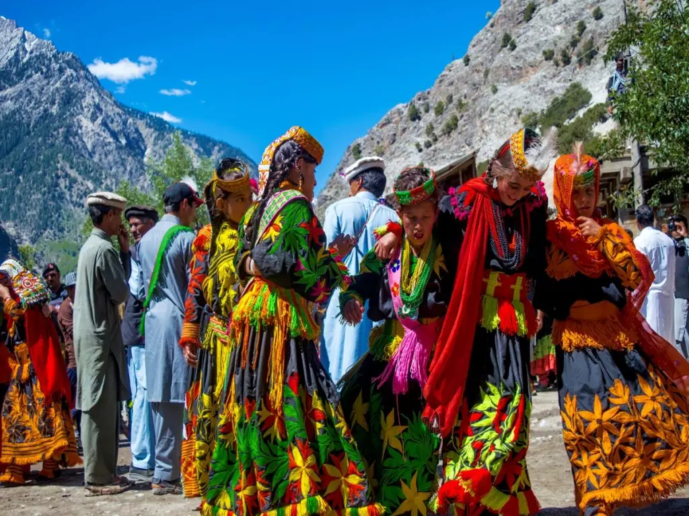
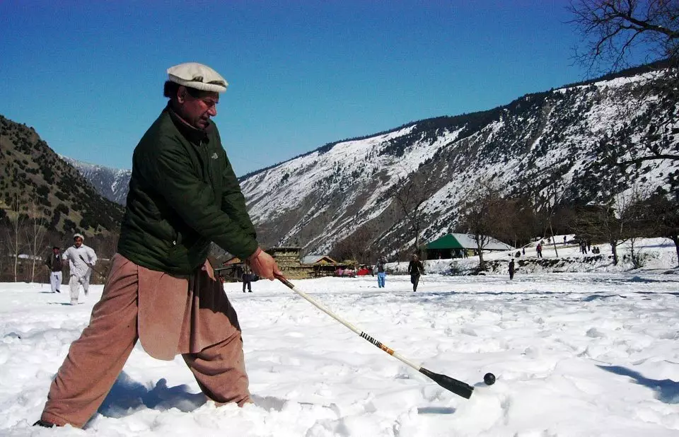
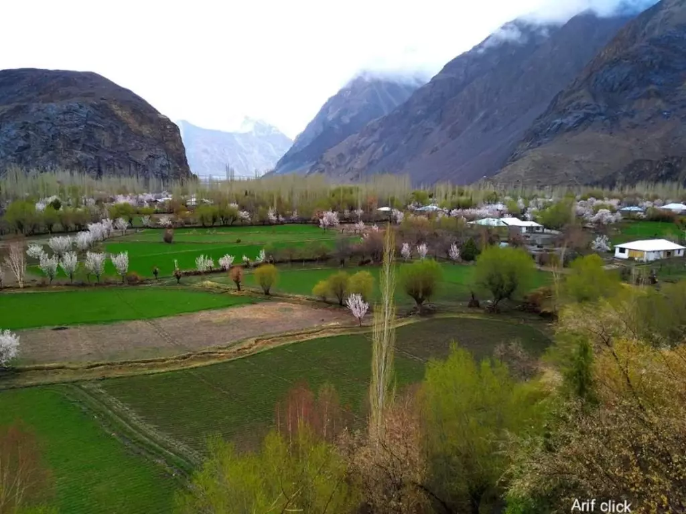

Chitral is a District of Khyber Pakhtunkhwa, Pakistan, and is situated at the Chitral River. Chitral was a princely state and was completely integrated into Pakistan in 1969 as the administrative district of Chitral. The people of Chitral are very peaceful. The district is covered with beautiful landscapes and the mountain region. This area of Pakistan is remote and is lacking technology and other facilities. The roads to Chitral are blocked in winter due to the heavy snowfall in the region. It is very hard to access Chitral in Winters.

Chitral is mostly known for the beautiful Kalash Valley in Chitral. Kalash Valley is a part of Pakistan but the inhabitants living here are non-muslims. The people of Kalash are sometimes thought to be Turkish and sometimes they are taken as Persian origin. There is another belief that Kalashi people are the direct descendants of the army of Alexander The Great. Only God knows whats the right thing behind all these thoughts. Kalashi people live in the houses made up of local stones and woods. They earn their living from crops and they also herd goats to make up for their families. The culture of Chitral is very famous. Their unique dresses and dances, their music and old songs, everything is extremely remarkable. The language spoken in Chitral is Khowar, whereas the people of Kalash speak Kalashi. Urdu is almost understood by everyone and Very few people in Chitral also speak Pashto.

The festivals that are celebrated in Chitral are not known in the other parts of the country. One of those festivals is Jashn-e-Nowroz which is celebrated annually on 21st March in memory of Sufi Saint Peer Nashir Khisraw. Peer Nasir Khisraw is considered as the person who introduced Ismaili faith in this region. Another Internationally known festival is the Shandur Polo Festival. Shandur Polo Ground is the highest Polo Ground in the World.
Chitral is known for its tourist destinations and is famous around the globe. People visit Chitral and take out the best memories out of here. While visiting Chitral, don’t forget to see the beauty of Tirich Mir, which is the highest peak of the Hindu Kush Mountain Range. Other places are Chitral Museum, Shahi Masjid, Shahi Qila, Garam Chashma, Barmoghlasht, Ayun Valley, Shandur Polo Ground, Kalash Valley, Koghazi and Goleen, Karambar Lake and Shandur Lake.